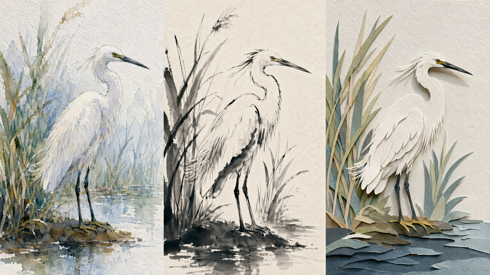
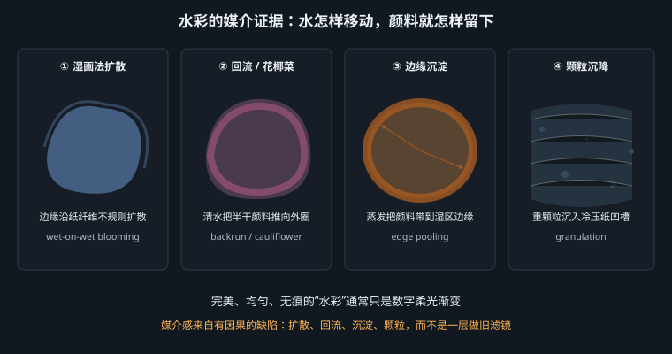

让 AI 相信“这是手工做的”，不是加一层纸纹，而是还原材料在制作过程中的行为

“水彩风”“剪纸风”经常只换了颜色与表面纹理，底层仍是数字插画：轮廓过准、色面过匀、每处细节都同样完整。问题不在模型不会模拟纸，而在提示词只给了结果名，没给材料为什么留下这些痕迹。
可靠的媒介提示词应该是一条因果链：工具施力 → 材料响应 → 干燥或叠压 → 可见痕迹。例如“水彩纸纹”只描述表面；“湿颜料沿冷压纸凹槽不均匀扩散，干燥后边缘沉积更深”则同时约束了边缘、颗粒与明度分布。后者更难被模型误解成 Photoshop 纹理叠加。
| 只写结果 | 补上物理行为 | 画面差异 |
|---|---|---|
watercolor texture | wet pigment diffusing into damp cold-pressed paper, darker pigment settling at drying edges | 从均匀柔光变成有扩散、有沉积的水性边缘 |
ink wash style | each stroke begins with a loaded dark tip and ends in a dry split-brush tail | 从灰色水彩变成一笔内可见起、行、收的书写痕迹 |
paper cut style | separate colored paper layers with visible thickness and narrow shadows in every overlap | 从矢量平涂变成能数出层数的实体纸片 |
手工材料的识别线索，恰恰是数字流程会自动清掉的东西：水痕、纸纤维、颜料颗粒、刀口微毛边、套层的轻微偏移。提示词要主动索取少量、局部、符合因果的缺陷。不要笼统写 messy 或 distressed，那只会把画面做脏；要写缺陷发生在哪里、由什么造成。
水彩的独特性首先来自水，而不是淡颜色。水分决定颜料能走多远、边缘是软是硬、颗粒停在哪里。要让生成结果像真实水彩，至少要控制下面六个现象。
| 物理特征 | 形成机制 | 对应提示词 |
|---|---|---|
| 湿画法扩散边缘 | 纸面已湿，颜料被水膜带走；靠近水膜边界时速度下降，因此边缘柔软但不等于高斯模糊 | irregular feathered wet-on-wet diffusion edges |
| 水痕／回流 cauliflower, backrun | 半干色层被一滴更湿的水推开，水从中心向外搬运颜料，在外圈形成深色花边，内部变浅 | a few controlled cauliflower blooms and backruns with dark scalloped rims |
| 边缘沉淀 | 水蒸发时毛细流把颜料带向边缘，形成比中心更深的“咖啡环” | pigment pooling and drying darker along selected edges |
| 透明叠色 | 水彩以透明薄层（glaze）叠加；下层仍可透见，两色光学混合而非被上层遮住 | transparent glazed washes, underlying strokes visible through overlaps |
| 留白 | 传统透明水彩不以白颜料画亮部，白是未着色的纸；高光因此与纸底完全同质 | highlights reserved as untouched white paper, no white paint |
| 颗粒沉降 | 群青、赭石等较重颜料会沉进粗纸凹槽，产生细碎深点；合成染料则更均匀 | granulating ultramarine and ochre settled into the paper tooth |
这里有一个重要区分：扩散边缘不等于数字模糊。高斯模糊会把边缘内外均匀混合，形成光滑的雾；真实湿边沿纸纤维不规则推进，局部有枝杈，有的位置停得突然。提示词要同时写 irregular、feathered 与纸张类型，不能只写 soft edges。
a small kingfisher perched on a reed beside a quiet pond, soft overcast daylight, no dramatic cast shadow, transparent watercolor on 300 gsm cold-pressed cotton paper, irregular feathered wet-on-wet edges in the background, crisp wet-on-dry strokes around the bird's eye and beak, a few controlled cauliflower blooms and backruns in the pond wash, granulating ultramarine and burnt sienna settled into the paper tooth, transparent glazed color overlaps, pigment pooling at selected drying edges, highlights on the breast reserved as untouched white paper, uneven hand-painted coverage, visible cotton fibers, editorial nature illustration with empty margin for a caption --ar 4:5
模型：MJ v8.1 · 画幅 4:5 · --stylize 125
| 提示词片段 | 控制对象 |
|---|---|
300 gsm cold-pressed cotton paper | 指定中等凹凸的冷压纸。热压纸过平，粗纹纸又会抢主体；300 gsm 还暗示纸不易因水量而严重翘曲 |
wet-on-wet ... background / wet-on-dry ... eye and beak | 用不同水分状态分配虚实：背景湿画法，识别点干纸落笔。比写“主体清晰、背景柔和”更符合媒介逻辑 |
a few controlled | 限制缺陷数量。回流到处都是会像操作失误，不再像有意识的绘画 |
reserved as untouched white paper | 把白色从“颜料”改成“未画区域”，这是水彩高光最关键的工艺事实 |

症状是颜色很淡、边缘很软，但没有一处水痕、沉淀或颗粒，纸纹像统一覆盖在最上方。原因是模型把 watercolor 解释成调色预设。补救时不要再加 dreamy, ethereal, soft glow——这些词只会强化数字柔光。改为写两种相反边缘并存：wet-on-wet feathering beside crisp wet-on-dry brush edges，再加 no airbrush gradient, no glow, no bloom。
中国水墨动画在 20 世纪 60 年代形成成熟语言，《小蝌蚪找妈妈》（1960）把齐白石式的虾、蛙、荷塘转换为逐帧运动；《山水情》（1988）则把写意山水的皴、染、留白组织成镜头空间。它们不是“用水彩画中国题材”，核心差异是书写性：每一笔都保留落笔、行笔、收笔的时间顺序。
| 水彩 | 水墨动漫 | |
|---|---|---|
| 最小单位 | 色块／水洗面 | 笔画／墨迹 |
| 一笔内部 | 主要看水分扩散与颜色沉积 | 看笔锋：按下变宽、提起变细；饱墨转淡墨；湿锋转枯锋 |
| 颜色组织 | 靠多色透明叠加 | 靠焦、浓、重、淡、清五种墨色；少量设色只是辅助 |
| 空白 | 高光与未画区域 | 同时充当天空、水面、雾气和空间距离，是主动构图的正形 |
| 边缘 | 由纸面干湿决定 | 由笔锋干湿与运笔速度共同决定 |
| 运动感 | 色块流动 | 笔势流动：观众能反推手腕的方向和速度 |
“一笔见笔锋”可以拆成三个可见证据。第一，起笔蓄墨：笔尖最初颜色深，压力落下形成饱满墨团；第二，行笔衰减：墨量逐渐减少，线条由湿润完整转为纤维状飞白；第三，收笔出锋：手腕提起，线迅速变细并以尖端结束。若一根线从头到尾都是均匀灰色，就算它有水渍，也只是水彩线，不是书写性笔画。
a lone fisherman in a small boat crossing a misty mountain river, the boat moving left to right through a large field of blank paper, soft diffuse light implied rather than rendered, traditional Chinese ink-wash animation aesthetic, each brushstroke visibly beginning with a loaded dark tip, then fading into a dry split-brush tail with exposed paper fibers, varied ink tones from dense black foreground reeds to pale distant mountains, soft bleeding edges where wet ink meets absorbent xuan paper, a few sharp calligraphic strokes for the boat and figure, large intentional unpainted areas serving as water, mist and sky, minimal pale mineral-blue accent only on the fisherman's robe, hand-painted animation background, wide cinematic frame --ar 16:9
模型：Seedream 5 · 画幅 16:9 · 负面词：watercolor rainbow, digital gradient, photorealistic, glossy 3d, hard geometric shadow
| 片段 | 作用 |
|---|---|
moving left to right through a large field of blank paper | 把运动方向与留白合并：船前方的空白同时是水面，也是叙事上的“将要抵达” |
loaded dark tip ... dry split-brush tail | 用墨量变化定义一笔的时间，而非只索取“墨迹纹理” |
dense black foreground ... pale distant mountains | 以墨色浓淡建立空间，不依赖摄影式景深虚化 |
intentional unpainted areas serving as... | 说明留白承担的对象。只写 negative space，模型可能理解成极简排版，而不是水墨空间 |
做水墨动漫关键帧时，不要把画面填满。前景芦苇、中景船、远山、雾应具有明确的分层和互不粘连的剪影，这样后续才可做视差与独立运动。提示词可追加 clear separable foreground, midground and background ink layers for animation。这是应用层约束，不改变媒介风格，却决定图能不能进入制作流程。
剪纸视觉包含两种不同传统。民间单层剪纸靠折叠、镂空与正负形构图，通常单色、无投影；当代商业插画常说的“paper cut”更多指多层彩纸叠压，靠层间投影形成浅浮雕。提示词若不区分，模型会把两者揉成普通扁平插画。
多层剪纸的物理证据有四个：
an underwater coral reef built from six stacked layers of colored paper, a sea turtle crossing the center from lower left to upper right, layered cut paper, crisp hard-cut edges, visible 1 mm paper thickness along every cut edge, small pierced openings revealing the contrasting layer underneath, soft directional light from upper left, narrow consistent drop shadows only between overlapping paper layers, flat unshaded color within each paper layer, limited palette of deep navy, teal, turquoise, coral, warm pink and cream, slight handmade scissor irregularity and a few exposed paper fibers, front-facing shadow-box composition, clear silhouette, no depth of field, children's museum poster with empty title area at top --ar 4:5
模型：FLUX.2 · 画幅 4:5 · 负面词：vector illustration, gradient fill, bevelled plastic, glossy 3d, soft airbrush edge, photographic ocean
| 片段 | 控制对象 |
|---|---|
six stacked layers | 限制复杂度，让观众能数出层级；层数不明确时，模型常以连续景深冒充分层 |
1 mm paper thickness | 给厚度一个尺度，避免生成泡沫板般的粗边或完全无厚度的矢量片 |
shadows only between overlapping layers | 只允许层间影，禁止色块内部渲染；这是剪纸与普通 3D 浅浮雕的分界 |
flat unshaded color within each paper layer | 保住每层纸的平涂性。光影发生在层与层之间，不发生在纸面内部 |
empty title area at top | 用途层：让成品能直接进入海报排版，而不是二次裁切时破坏主体 |
若色块硬、颜色有限，却没有层间窄影、纸边厚度和镂空露底，它只是“剪纸题材的矢量插画”。最有效的修复不是继续加 paper texture，而是逐条补齐空间证据：layered cut paper, visible paper thickness, drop shadows between layers, pierced cutouts revealing lower layers。反过来，若投影太宽太软，画面会像舞台布景；把光源写成 soft directional light 30 degrees from upper left，并限制为 narrow shadows。
“手作感”不是把所有缺陷都加一遍。水彩的水痕来自水分迁移，水墨的飞白来自枯笔刮过纸峰，剪纸的毛边来自刀口切断纤维；它们不能互换。若给水墨加油画裂纹、给剪纸加水彩回流，观众说不出哪里错，却会直觉地觉得“像一个滤镜包”。
| 验收问题 | 水彩 | 水墨动漫 | 多层剪纸 |
|---|---|---|---|
| 边缘由什么决定？ | 纸面干湿；湿边扩散、干边清晰 | 笔锋干湿、压力与速度 | 刀剪切割；始终硬边 |
| 白从哪里来？ | 纸面留白 | 未落墨的空间 | 白色纸层或镂空露出的白底 |
| 体积从哪里来？ | 透明叠色与少量色阶 | 墨色浓淡和皴擦 | 只来自层间投影 |
| 合格缺陷 | 回流、沉淀、颗粒、轻微水渍 | 飞白、墨晕、笔锋分叉、淡墨渗化 | 轻微刀口不齐、纸纤维、套层微偏 |
| 一票否决 | 通篇均匀柔光渐变 | 每根线同粗同灰、无起收 | 无纸厚、无层间影 |
看到“某某媒介风”，先不要直接写风格名。按四步改写：
一条好媒介提示词，应该让人即使删掉 watercolor、ink wash 或 paper cut 这些风格标签，也仍能从物理描述判断它是什么材料。做到这一点，模型指称才是助推器，而不是拐杖。